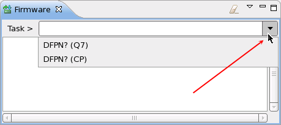
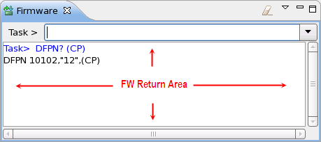
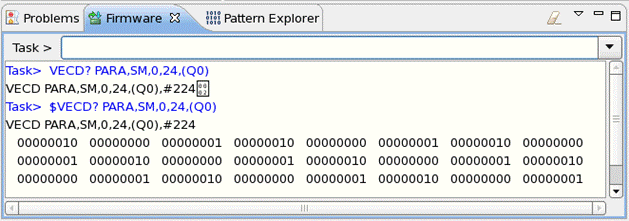

Firmware view
You can directly enter firmware command in the Task text box, or select firmware command from the task history, which includes all the previously-entered commands. The task history is opened as depicted below.

After typing the firmware command, pressing Enter, the result of the command entered is show in the FW Return Area.

To clean the FW Return Area or the task history, click the Menu button on the top right corner of the FW Command Tool view, and then select the corresponding item.
You can copy and paste firmware commands to the Task text box. When you input more than one command in one line, you need to divide them by ";".
If you use the prefix $ with a firmware command, the command returns data in binary mode that represents each bit by ASCII 1 or 0.
$VECD
PARA,SM,0,8,(S0_1),00001001 00001000 00000111 00000110 00000101 00000100 00000011
00000010Example
As the following example shows, the VECD? query returns vector data
from the sequencer memory in the range between 0 and 8, for the S0_1 pin.
Add the $ prefix to the query command to retrieve the binary data in a readable format.

Functional changes
- Introduced in SmarTest 6.5.2